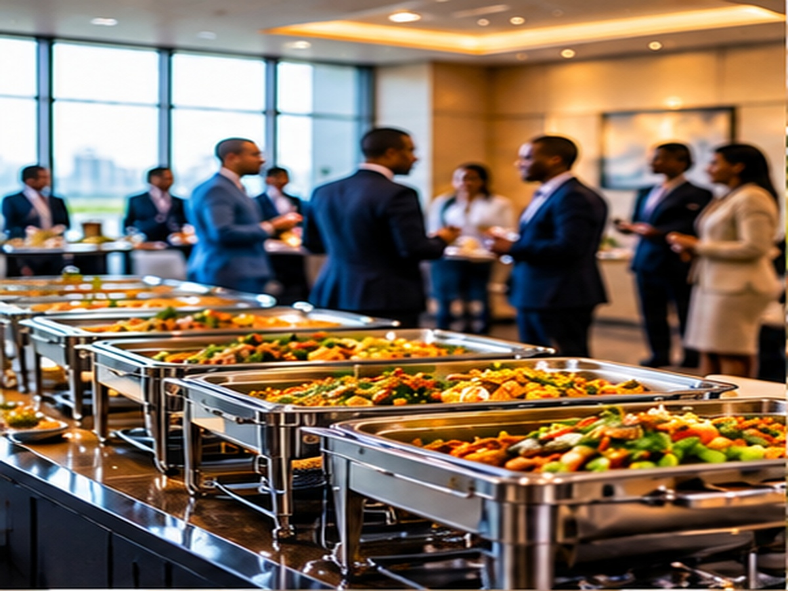
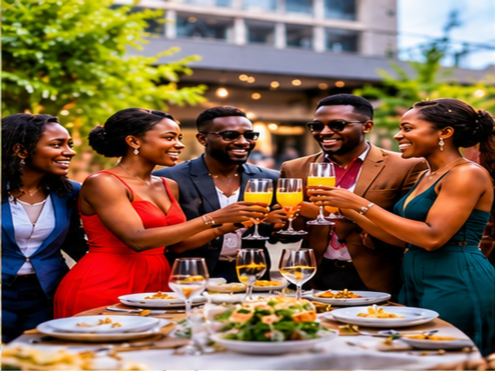
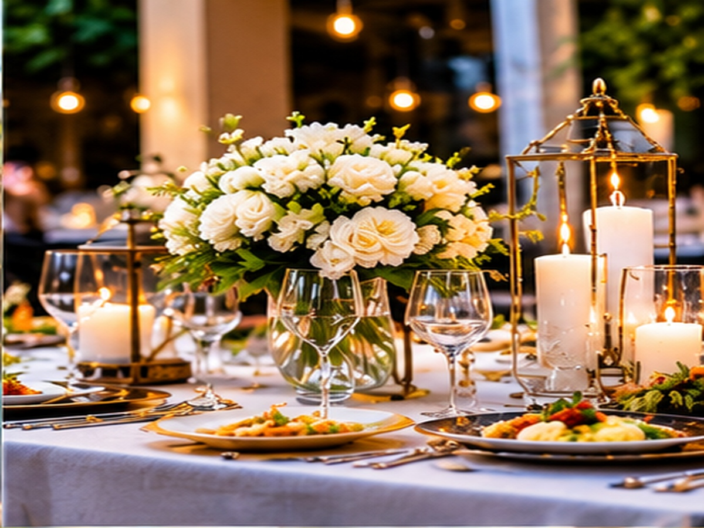
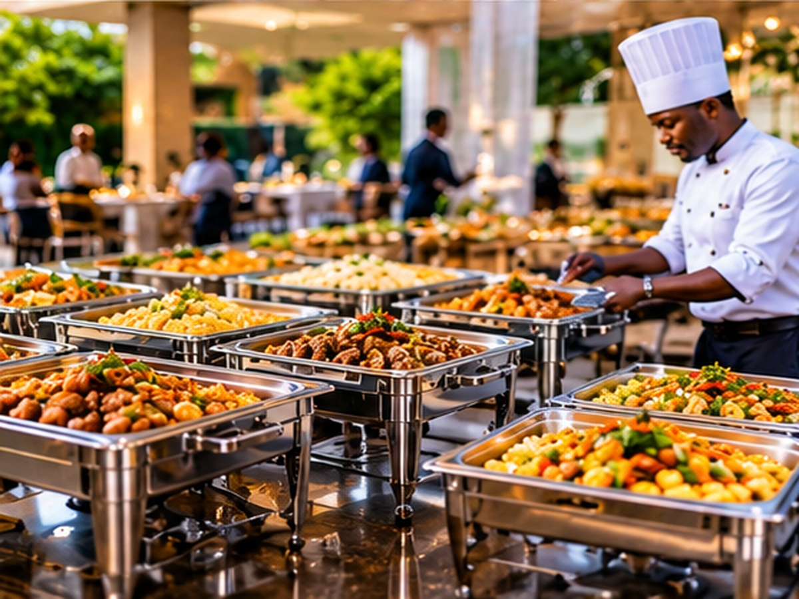
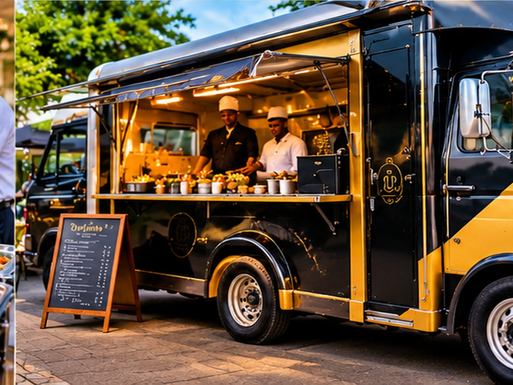
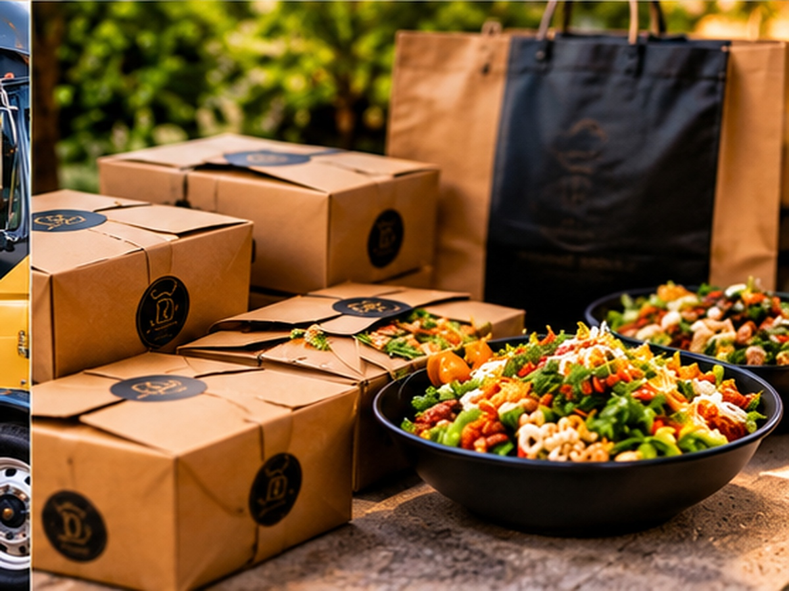

Welcome to Dede's Urban Bistro
Experience the finest culinary delights in a cozy urban setting.
Explore Our MenuAt Dede's Urban Bistro, we believe that a fast-paced metropolitan lifestyle shouldn't mean compromising on culinary excellence. We bridge the rich comfort of standard neighborhood dining with a sleek, high-vibe metropolitan aesthetic. Our concept is engineered specifically for the city’s rhythm—bringing you bold culinary innovations, responsibly sourced ingredients, and a welcoming atmosphere that serves as your ultimate urban escape.
- Culinary Craft, Modern Pace:
- A Space to Fuel and Connect:
- Digitally Streamlined Dining:
Every plate is a celebration of fresh, vibrant flavors meticulously prepared to satisfy the hustle of your day without ever rushing the quality of the food.
From early morning artisanal coffee sessions to vibrant, relaxed evening dinner plates, our cozy contemporary dining room transitions seamlessly with your schedule.
Built with a forward-thinking, tech-driven operational edge to ensure your browsing, ordering, and service run completely flawlessly.

About Us
Dede's Urban Bistro is a culinary haven where the art of cooking meets the rhythm of city life. Our mission is to provide an exceptional dining experience that combines innovative cuisine, a welcoming atmosphere, and impeccable service. We are committed to sourcing the finest ingredients and crafting dishes that delight the senses.

Our Story
Founded by Chef Dede, our bistro was born out of a passion for creating memorable dining experiences. With years of culinary expertise and a love for the vibrant city life, Chef Dede has crafted a menu that reflects both innovation and tradition.
Our Mission
At Dede's Urban Bistro, we are dedicated to providing an exceptional dining experience that combines innovative cuisine, a welcoming atmosphere, and impeccable service. Our commitment to excellence drives everything we do.
Our Vision
Our vision is to become a leading destination for food enthusiasts, where every visit is an opportunity to explore new flavors, connect with the community, and create lasting memories.
Our Values
- Quality: We use only the finest ingredients to create our dishes.
- Innovation: We continuously explore new culinary techniques and flavors.
- Community: We strive to be an integral part of the local community.
- Sustainability: We are committed to environmentally responsible practices.
Meet Our Team
Built from the ground up, our founding team brings a shared passion for food and genuine hospitality straight to your table. Because we are small and hands-on, we personally oversee every detail from crafting each dish to welcoming you through our doors ensuring a memorable dining experience for all.
-
Belinda Ouko - General Manager & Founder
-
Jeremy Ouko - Senior Advisor & Co-Founder


Catering & Events
Let us bring the taste of Dede's Urban Bistro to your next event. We offer catering services for private parties, corporate events, and special occasions.
Book Catering ServicesExplore our catalogue
Our catering menu features a wide range of options to suit any event. From elegant hors d'oeuvres to hearty main courses, we can customize our offerings to meet your specific needs and preferences.
By Event / Occasion Type
- Corporate Events
Food and beverage service for business functions like board meetings, office lunches, seminars, product launches, and large conferences.

- Wedding Parties
Specialized service for wedding ceremonies and receptions, often featuring tastings, multi-course meal design, and close coordination with wedding planners and venues.

- Private Parties
Tailored dining for personal milestones such as birthday parties, family reunions, anniversaries, and baby showers.

- Special Occasions
Catering for unique events like holiday celebrations, themed parties, and community gatherings.

By Service Style & Format
- Full Service Catering
End-to-end event management that includes menu planning, cooking, on-site setup, professional servers, bartenders, and post-event cleanup.

- Food Truck & Mobile Catering
On-site preparation and serving from a mobile vehicle or portable pop-up kitchen, popular for outdoor events and festivals.

- Drop-Off Catering
Food prepared off-site and delivered in disposable or semi-reusable containers directly to the venue, without on-site staff or active cleanup.

Welcome to The Vault
Where great food meets great fun. Play, earn rewards and enjoy the experience!
Spin & Win
Feeling lucky? Spin the wheel and discover your surprise reward.
Foodie Trivia
How much do you really know about food, cooking and flavours?
Scratch & Win
Scratch away the mystery and reveal what's waiting for you.
Match the Meal
Find matching food pairs. Test your memory against the clock!
Bookings & Reservations
Reserve your table in advance to ensure a seamless dining experience. We recommend booking ahead, especially during peak hours and weekends.
Book a Table NowFeel free to reach out to us for queries, feedback, or any special requests. We value your input and look forward to serving you.